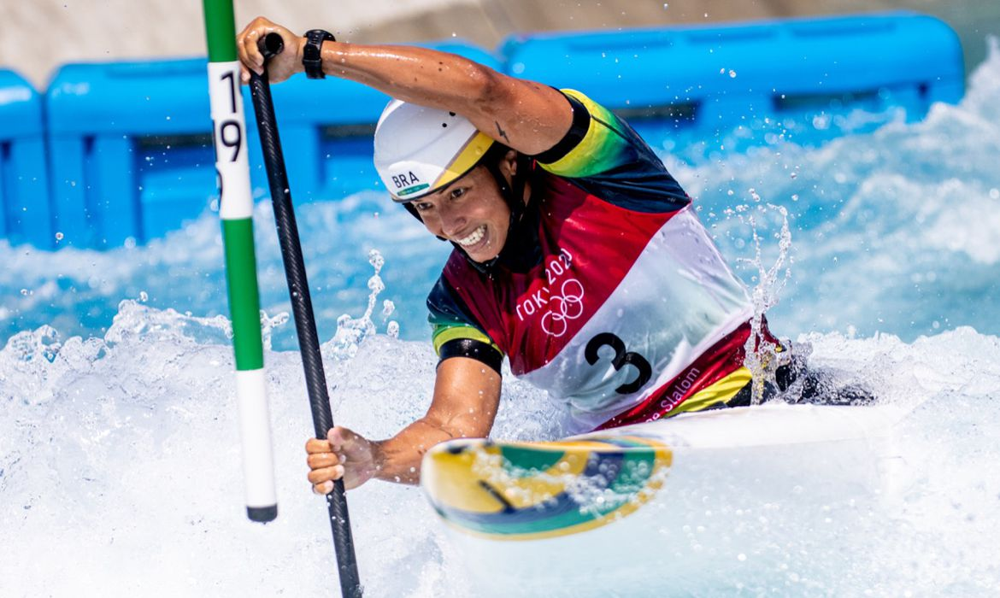

Jogos Olímpicos

Descrição: Competidor de Canoagem Slalom remando nas Olimpíadas
A canoagem slalom foi incluída nos Jogos Olímpicos como esporte de demonstração em Munique, em 1972. Naquela época, a modalidade era ainda pouco conhecida e a competição contou com apenas seis participantes, todos europeus.
A canoagem slalom foi oficialmente incorporada ao programa olímpico a partir dos Jogos Olímpicos de Barcelona, em 1992, com competições individuais masculinas e femininas. Desde então, a modalidade tem sido disputada em todas as edições dos Jogos Olímpicos.
Ao longo dos anos, as competições de canoagem slalom nas Olimpíadas passaram por mudanças significativas em termos de formato e regras. Na edição de Atlanta, em 1996, por exemplo, as competições de equipe foram introduzidas, permitindo que os países pudessem disputar medalhas coletivas.
A partir dos Jogos Olímpicos de Sydney, em 2000, o número de portas (obstáculos a serem ultrapassados) nas pistas de canoagem slalom passou de 20 para 25, aumentando a dificuldade das provas.
Atualmente, as competições de canoagem slalom nas Olimpíadas incluem quatro provas:
- K1 masculino
- K1 feminino
- C1 masculino
- C1 feminino
A canoagem slalom nas Olimpíadas é considerada uma das modalidades mais emocionantes e desafiadoras dos Jogos, atraindo atletas de todo o mundo e despertando o interesse do público pela prática da canoagem.